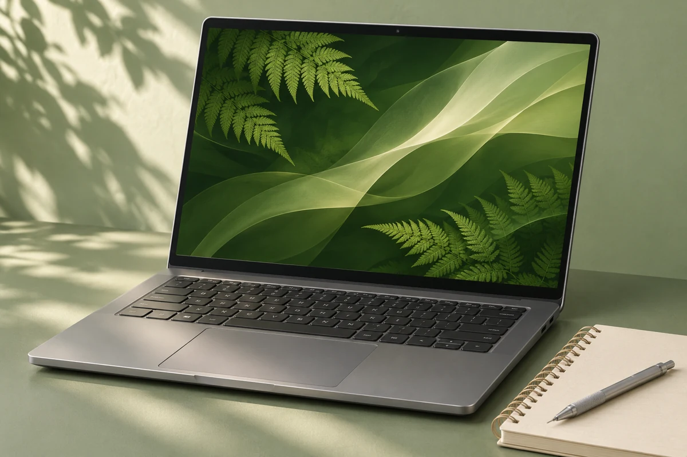

- Laptops
- Lowest price
Campus picks
Explore a budget laptop, an ultrabook and a gaming model.
From lecture notes to late-night projects, find a laptop that fits your workload and your budget.

Explore a budget laptop, an ultrabook and a gaming model.